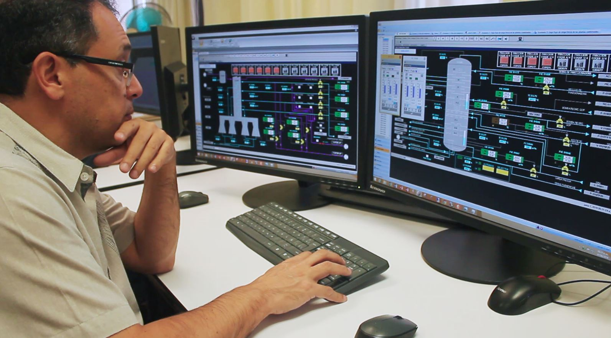
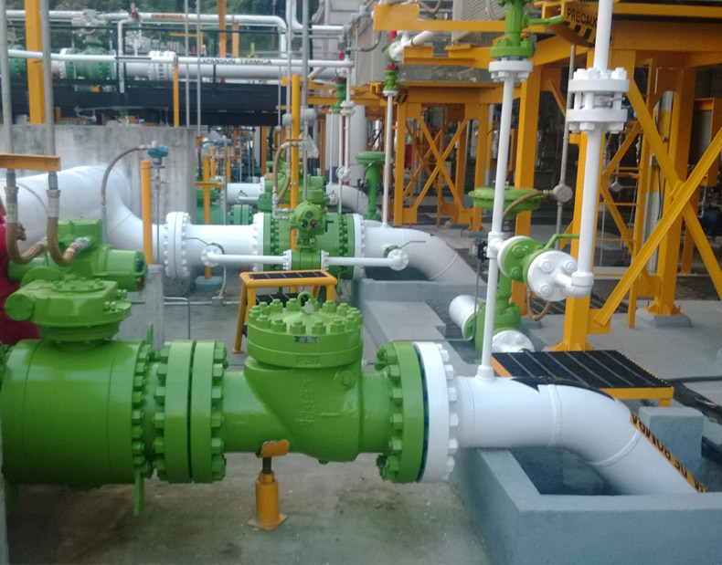
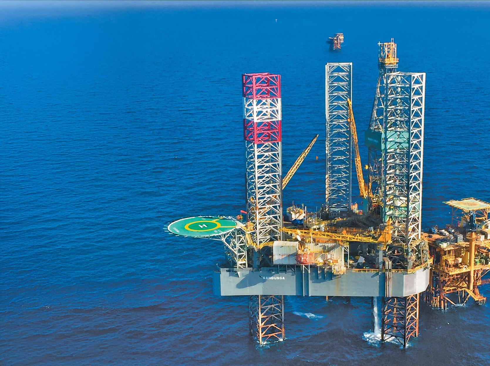
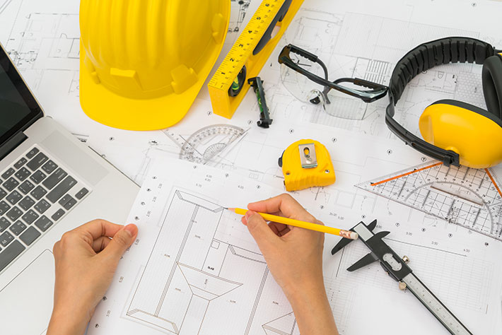

Experiencia Laboral
Nuestro personal ha participado en múltiples proyectos industriales y de investigación

Desarrollo de Simuladores Dinámicos para Entrenamiento de Operadores
Transferencia y Asimilación de Conocimiento Tecnológico Operativo por medio de Modelos Dinámicos de Plataformas Virtuales integradas a la Plataforma Universidad Pemex
Selección del arreglo de pozos óptimo para inyección de ASP
Revisión y verificación de líneas de flujo en yacimiento. Toma de muestra de aceite, gas a boca de pozo. Análisis de costos. Análisis de las pruebas de interferencia e inyectabilidad realizadas en pozos.
Cálculo el volumen poroso, para obtener el requerimiento de producto químico utilizado en las pruebas ASP.
Administración integral de gestión tecnológica a realizarse en los sistemas de producción de las entidades de PEP
Administración integral del proceso de control, seguimiento y evaluación de nuevas tecnologías para pruebas piloto y tecnológicas a realizarse en los sistemas de producción en los Activos Integrales de Explotación.

Desarrollo de Ingeniería
Desarrollo de Ingeniería para la Construcción de una Estación de Re-bombeo en Degollado Jalisco para Pemex Refinación.
Desarrollo de Ingeniería Básica y de Detalle para el Acondicionamiento y equipamiento del Centro de Monitoreo Región Norte del AIPRA.

Desarrollo de Ingeniería de Detalle
Desarrollo de Ingeniería de Detalle en Plataforma Habitacional Jack UP-2000G, Compresión Alta Litoral-A (CA-LITORAL-A), Compresión Baja Litoral-A (CB-LITORAL-A),Plataforma de Perforación (PP-TEKEL-A), Plataforma Habitacional (HA-LITORAL-A2), Plataforma Akal-L, Plataforma Litoral Tabasco, Refinería Tula Hidalgo, Proyecto: 23474, Planta Hidrodesulfuradora, Proyecto: N-F. 27581-1817-11-092-U-700-2, Planta Hidrodesulfuradora, Proyecto: N-F. 27581 1817-11-09-U-800-2.

Proyectos de Ingeniería
Seguimiento y evaluación de pruebas tecnológicas y piloto a realizarse. Elaboración del procedimiento de para la realización de pruebas tecnológicas.
Proyecto F.24458: Desarrollo y Operación de un Modelo para la Aplicación y Seguimiento de Tecnologías y el Fortalecimiento de las Redes de Expertos de Explotación.
Proyecto 4900014535: Diagnóstico de los sistemas de compresión en los centros de procesos Abkatun-N1, Abkatún-A y Pol-A, del Activo de Producción Abkatún Pol Chuc.